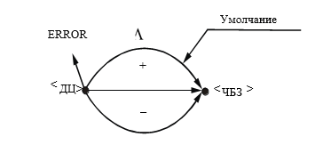
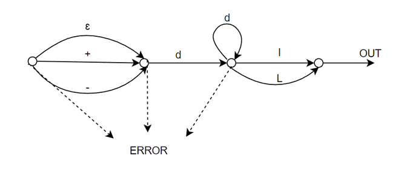

Метод анализа
Грамматика G[<Число>] – автоматная, значит для нее можно построить диаграмму состояний или граф.
Правило (1) отражено на диаграмме рис. 1.

Рисунок 1. Граф для правила (1) грамматики G[<ДЦ>]

Рисунок 2. Граф для грамматики G[<ДЦ>]
Все правила для G[<ДЦ>] реализованы на графе рисунке 2.
Сплошные стрелки на графе характеризуют синтаксически верный разбор; пунктирные символизируют состояние ошибки (ERROR); непомеченные дуги предполагают любой терминальный символ, отличный от указанного из соответствующего узла. Состояние OUT символизирует успешное завершение разбора.
Предыдущий документ
Следующий документ